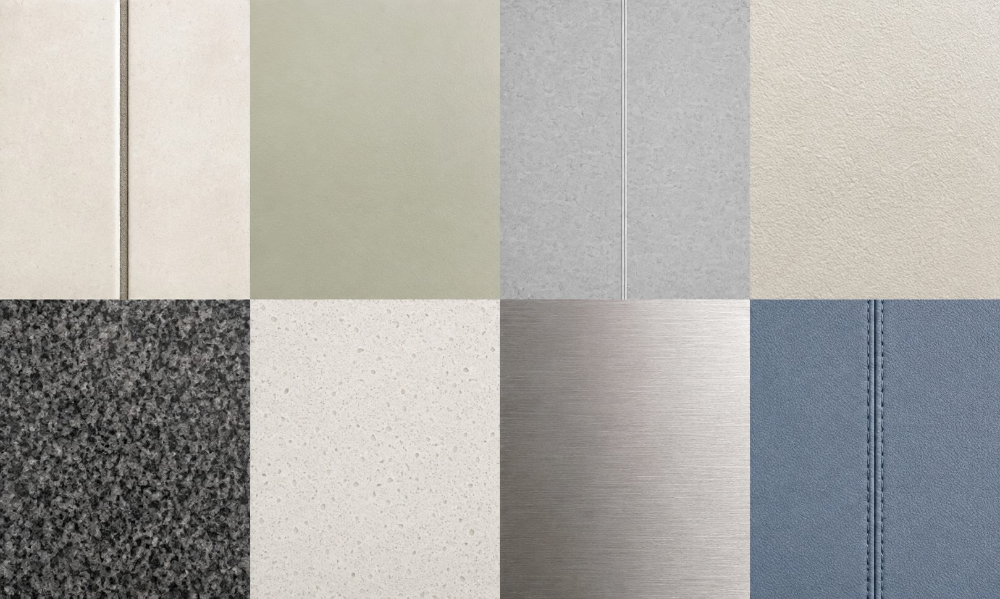
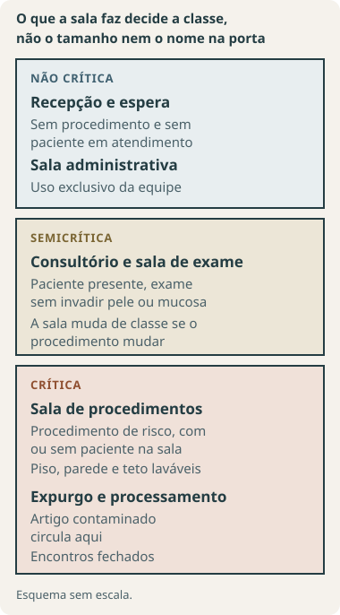
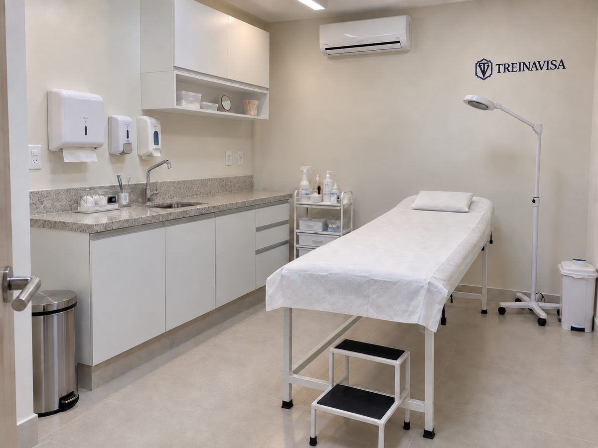
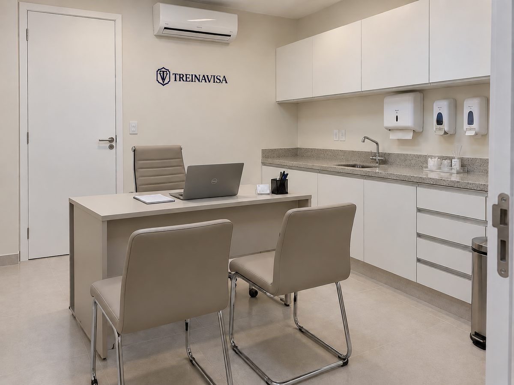

Encontros que merecem atenção. Esquemas ilustrativos, sem escala; não substituem detalhes de projeto.

Biblioteca visual: porcelanato · epóxi · vinílico · pintura / granito · quartzo · inox · estofado. Imagem gerada por IA, ilustrativa; não representa produtos certificados nem detalhes de execução aprovados.
Primeiro, entenda o seu ambiente
A RDC 50 não classifica material: classifica ambiente. O que a sala faz decide o que ela exige do piso, da parede e do teto. Comece aqui.

Esquema sem escala. A mesma sala muda de classe quando muda o procedimento realizado nela.

01
Área crítica
Ambiente com risco aumentado de transmissão de infecção. A RDC 50 enquadra aqui onde se realizam procedimentos de risco, com ou sem paciente na sala, e onde há pessoas com defesas imunológicas reduzidas. Sala vazia não deixa de ser crítica: o que classifica é o que se faz nela.
Exemplo de aplicação: sala de pequenos procedimentos cirúrgicos. Na estética em serviço de saúde, uma sala de procedimentos que rompem a pele exige avaliação pelo risco real da atividade, mesmo em uma clínica pequena.

02
Área semicrítica
Ambiente ocupado por pacientes com doenças de baixa transmissibilidade ou doenças não infecciosas.
Exemplo de aplicação: consultório destinado a consulta e exame não invasivo, conforme o atendimento realizado. Receber pacientes não torna o ambiente automaticamente crítico.
03
Área não crítica
Demais ambientes do serviço de saúde, sem ocupação por pacientes e sem procedimentos de risco.
Exemplo de aplicação: sala administrativa exclusiva da equipe. Não classifique a espera como não crítica apenas por não haver procedimentos: considere quem ocupa o local.
Uma clínica pode ter as três classes
Classifique cada ambiente pelas atividades e pelos pacientes, não pelo tamanho, pelo nome da clínica ou pela aparência do espaço. Os exemplos são aplicações explicativas dos critérios da RDC 50, Parte III, 6.2 A.2, e não uma lista oficial de enquadramentos.
Baixo risco do serviço não significa área não crítica
A classificação usada para licenciamento sanitário tem finalidade própria e depende das regras aplicáveis. Já a criticidade do ambiente orienta o controle de infecção. Um enquadramento não substitui o outro. Informe os procedimentos ao responsável pelo projeto e à vigilância local.
E na estética?
A Anvisa distingue serviços de saúde de serviços de interesse para a saúde conforme as atividades exigirem execução ou supervisão de profissional de saúde. A RDC 50 deve ser considerada no enquadramento como serviço de saúde. Não aplique automaticamente todas as regras de um estabelecimento assistencial a qualquer salão ou espaço de embelezamento. Ambos precisam cumprir a legislação aplicável e a avaliação sanitária local. Fonte: Nota Técnica Anvisa 2/2024, introdução e seção 2.7.
Material visível + base que o sustenta + cola ou argamassa + juntas e acabamentos. O resultado depende de todos.
Base, substrato e contrapiso
Base ou substrato é a superfície que recebe o acabamento. Contrapiso é a camada de regularização sob o piso.
Junta e rejunte
Junta é o espaço entre peças. Rejunte é o produto que preenche esse espaço. Algumas juntas permitem movimento e exigem solução própria.
Monolítico e contínuo
Acabamento que se comporta como superfície contínua, com poucos encontros. Não significa que nunca terá juntas de movimentação.
Absorção de água
Quanto de água o material absorve em ensaio. Não se determina pelo brilho, pela foto ou pelo nome comercial.
Lavável e resistente a desinfetantes
Suportar a limpeza e os produtos usados nas condições recomendadas, sem perder integridade. Ser lavável não prova resistência a qualquer desinfetante.
Área molhada
Expressão ligada à exposição à água. Não é sinônimo de área crítica, que trata de risco de infecção.
Epóxi, PU e PVC
Famílias de materiais: epóxi é uma resina; PU significa poliuretano; PVC é um plástico usado em diferentes revestimentos. O nome não certifica desempenho.
Primer e cura
Primer é a camada preparatória para melhorar a aplicação ou aderência. Cura é o tempo necessário para o sistema adquirir suas propriedades.
Abrasão e impacto
Desgaste por atrito e esforço causado por batidas ou quedas de objetos. Importam em pisos com circulação e equipamentos.
Drywall e forro
Drywall é um sistema de parede com placas sobre estrutura. Forro é o acabamento abaixo da cobertura ou laje. Avalie o sistema completo e suas juntas.
Estanqueidade e vedação
Capacidade de impedir passagem de líquido nas condições previstas; vedação é o fechamento de encontros. Uma emenda fechada visualmente não comprova o desempenho.
m² e metro linear
m² mede área: uma sala de 4 × 5 m tem 20 m² de piso. Metro linear mede comprimento, como rodapé. A área das paredes é calculada separadamente.
SINAPI
Tabela oficial de preços de obra publicada pela Caixa Econômica Federal com o IBGE. Traz um valor por serviço, por estado e por mês. Serve para orçamento público e, aqui, só para dar ordem de grandeza: não é tabela de preço de loja nem de prestador.
BDI
Sigla de Benefícios e Despesas Indiretas: a parcela que a empresa soma ao custo do serviço para cobrir administração, impostos, riscos e lucro. Os valores desta edição são custos SINAPI sem BDI, então a proposta que você receber costuma vir acima deles.
Composição e código
Cada serviço da SINAPI tem um número, chamado código de composição, e uma descrição do que está incluído. Citar o código é a forma de pedir orçamento do mesmo serviço, sem ambiguidade.
Quanto pode custar?
Preços de obra da tabela SINAPI, da Caixa, referência de julho de 2026, sem desoneração. Cada estado tem o seu valor, e a diferença entre o mais barato e o mais caro do país passa de 50% em vários serviços. São custos de serviço executado, somando material, mão de obra e equipamento, sem BDI: falta neles a parcela de administração, impostos e lucro que a empresa acrescenta na proposta, então o orçamento que você receber costuma vir acima destes valores. Também não entram conserto da base, remoção do que existe hoje, impermeabilização e soluções especiais. E preço não comprova adequação sanitária: um material barato pode ser inadequado para o seu ambiente, e um caro pode não resolver.
Fonte de todos os valores: tabela SINAPI da Caixa, referência de julho de 2026, emitida em agosto de 2026, sem desoneração e sem BDI.
Fichas sem preço verificado
São 14 das 29 fichas, e trocar de estado não muda isso: a SINAPI simplesmente não tem esses serviços. A biblioteca não inventa valor para eles; diz o motivo e o que pedir na cotação.
P07 · Manta vinílica com emendas soldadas
A SINAPI não tem composição de manta vinílica com emenda soldada. Peça cotação do sistema inteiro: manta, cola, solda das emendas e rodapé em meia-cana, lembrando que a solda é serviço à parte.
As composições de piso laminado e de carpete existem na SINAPI, mas sem custo publicado em estado nenhum nesta referência. Não é lacuna do seu estado: é do país. Antes de orçar, leia a ficha: são pisos que costumam não atender aos critérios de limpeza em serviço de saúde.
Na SINAPI o rejunte já está embutido no preço do revestimento cerâmico, e a composição usa rejunte cimentício comum. O epóxi é comprado à parte: peça cotação por m² de revestimento, informando a largura da junta e o tamanho da peça.
Também não tem preço próprio: o rejunte vem embutido no revestimento cerâmico. Peça ao fornecedor a diferença de preço entre o rejunte comum e o com aditivo, por m² de revestimento.
Sem preço próprio porque já vem embutido no revestimento cerâmico. Antes de orçar por ele, leia a ficha: esta biblioteca registra restrição expressa ao uso em área crítica.
A SINAPI não traz porcelanato assentado em parede interna em nenhum estado. O trabalho de assentamento se parece com o da cerâmica esmaltada de parede: use esse valor só para a ordem de grandeza da mão de obra e peça cotação da placa.
A SINAPI tem pintura epóxi de piso, mas não de parede. Peça cotação do sistema completo: preparo da base, primer, tipo de tinta e número de demãos. A pintura acrílica serve só de comparação, e ela não comprova resistência a desinfetantes.
As composições de divisória removível existem na SINAPI, mas sem custo publicado em estado nenhum nesta referência. Leia a ficha antes de orçar: esta biblioteca registra restrição expressa.
A SINAPI não tem composição de bancada em quartzo. Peça cotação por peça, informando medidas, espessura, tipo de cuba e acabamento das bordas. A bancada de granito serve de comparação.
A SINAPI não tem composição de rodapé em meia-cana. Ele costuma vir junto com o sistema de piso, vinílico ou epóxi: peça cotação do conjunto. O rodapé de borracha reto dá a ordem de grandeza.
Mobiliário não entra na SINAPI, que é uma tabela de obra. Peça cotação por peça e exija por escrito que o revestimento é lavável e resiste aos desinfetantes que você usa.
Todas as fichas estão na lista, com o preço do estado escolhido acima. Onde a SINAPI não tem o serviço, a calculadora diz o motivo e deixa você usar o valor da sua própria cotação. Para paredes, informe a área das paredes, não a do piso.
Informe as medidas para calcular.
O cálculo multiplica a sua medida pelo preço escolhido. Não acrescenta perdas de corte, conserto da base, remoção do que existe hoje nem BDI, e não diz se o material serve para o seu ambiente: isso está na ficha. Para rodapé, informe o comprimento efetivo, descontando as portas.
O preço de cada ficha aparece na própria ficha e em Comparar lado a lado, sempre no estado escolhido aqui. Compare dentro do mesmo escopo: o mais barato pode ser justamente o que a ficha desaconselha para o seu ambiente, e o mais caro pode não resolver o seu problema. O preço entra na decisão depois do critério, não antes.
Escolher pelo sistema completo
Uma superfície adequada combina material, base, juntas, acabamento, execução e manutenção. Esta biblioteca orienta a escolha e a inspeção; não certifica produtos nem substitui o projeto e sua avaliação pela autoridade competente.
Como ler as fichas
“Uso condicionado” indica uma opção que precisa atender ao ambiente e ter seu desempenho demonstrado. “Restrição expressa” identifica uma vedação com contexto normativo. “Cautela técnica” é recomendação de projeto, não proibição por nome comercial. Em todas as fichas, a comprovação depende do produto efetivamente escolhido.
Três tipos de informação
Obrigação normativa: requisito identificado por dispositivo. Recomendação técnica: orientação para especificar, executar ou inspecionar com segurança. Comprovação do fabricante: desempenho, aplicação e manutenção que precisam de documentação específica. As recomendações não devem gerar autuação isoladamente.
Aplicação nacional e limites locais
O núcleo é a RDC 50/2002 para estabelecimentos assistenciais de saúde, complementada pelas RDC 63/2011 e 51/2011. Normas específicas do serviço, acessibilidade, segurança contra incêndio e regras estaduais ou municipais podem acrescentar requisitos. Esta edição não faz uma verificação local nem uma análise especializada de cada tipo de serviço.
O que a norma exige
Abra cada critério para consultar o alcance e o dispositivo exato.
Classificar o ambiente
O risco decorre das atividades e dos pacientes atendidos. Áreas críticas envolvem risco aumentado de transmissão, procedimentos de risco com ou sem pacientes na sala, ou pacientes imunodeprimidos; semicríticas incluem compartimentos ocupados por pacientes com doenças de baixa transmissibilidade ou não infecciosas. Não classifique uma espera ou um consultório apenas pelo nome.
Em paredes, pisos e tetos de áreas críticas e semicríticas, verificar resistência à lavagem e aos desinfetantes. A norma determina priorizar acabamentos monolíticos, com o menor número possível de ranhuras e frestas, inclusive após uso e limpeza frequentes. O primeiro parágrafo de C.1 manda seguir, para limpeza e sanitização de pisos, paredes, tetos, pias e bancadas, o manual Processamento de Artigos e Superfícies em Estabelecimentos de Saúde, do Ministério da Saúde, 2ª edição, 1994, ou o que vier a substituí-lo.
O limite é de 4% para os materiais, cerâmicos ou não, individualmente ou depois de instalados. O rejunte, quando houver, deve atender ao mesmo limite. O nome comercial, o brilho e a alegação “impermeável” não demonstram esse desempenho. Não converta esse limite em regra geral de toda área semicrítica.
É vedado cimento sem aditivo antiabsorvente para rejuntar peças cerâmicas ou similares em pisos e paredes de áreas críticas. Ter aditivo não dispensa comprovar o limite de absorção. A norma não torna o epóxi a única solução.
Epóxi, PVC, poliuretano e outras tintas destinadas a áreas molhadas podem ser usados em áreas críticas se resistirem à lavagem e aos desinfetantes e não forem aplicados com pincel. No piso, devem resistir também à abrasão e aos impactos previstos.
Divisórias removíveis não são permitidas em áreas críticas. Paredes pré-fabricadas podem ser usadas com acabamento monolítico, sem ranhuras ou perfis estruturais aparentes e resistentes à lavagem e aos desinfetantes. Em semicríticas, divisórias devem resistir à lavagem com água e sabão e aos desinfetantes.
A junção deve permitir a limpeza completa do canto; o rodapé deve ficar alinhado à parede, evitando ressalto que acumule pó. O texto critica o arredondamento acentuado. Não determina raio de curvatura, altura universal ou uso obrigatório de meia-cana.
Em áreas críticas, o teto deve ser contínuo, e o texto destaca especialmente as salas destinadas a procedimentos cirúrgicos ou similares. O texto proíbe forros falsos removíveis do tipo que interfira na assepsia. Nas demais áreas admite forro removível; nas semicríticas, exige resistência à limpeza, descontaminação e desinfecção. Avalie o sistema, não apenas o material da placa.
Em áreas críticas e semicríticas, as tubulações devem ser embutidas ou protegidas. A proteção deve permitir higienização e preservar a integridade da instalação; C.1 também exige resistência a impactos, lavagem e desinfetantes.
Manter instalações conservadas e limpas, gerenciar riscos de acidentes e realizar manutenção preventiva e corretiva. A seleção inicial não encerra a avaliação: desgaste, fissuras e falhas de vedação precisam ser tratados.
Colchões, colchonetes e demais móveis almofadados devem ter revestimento lavável e impermeável, sem furos, rasgos, sulcos ou reentrâncias. O requisito alcança o mobiliário do serviço, inclusive em espera quando se enquadrar nessa descrição.
A análise considera atividades, ambientes e materiais propostos. Verifique a legislação local e o procedimento aplicável à obra. Serviços de baixa complexidade podem ter análise simplificada definida pela autoridade competente, sem dispensa das condições sanitárias.
A pergunta de quem está decidindo raramente é "o que é porcelanato": é "porcelanato ou vinílico na minha sala de procedimento". Escolha até três e veja onde cada um serve, quando evitar, quanto custa no seu estado e o que a norma cobra.
A aprovação depende da avaliação do seu caso pela vigilância sanitária local, que tem exigências próprias e olha o ambiente inteiro, não o material isolado. Na prática, o projeto pede dois profissionais: a consultora sanitária, que lê a exigência e diz o que a vigilância vai cobrar, e o arquiteto ou engenheiro, que desenha e responde tecnicamente pela obra. Esta biblioteca dá a base comum aos dois; ela não faz o papel de nenhum.
Biblioteca de materiais
O filtro localiza fichas. A indicação de uso não é uma aprovação de produto: especificação e inspeção são recomendações técnicas, desempenho é comprovação do fabricante, e as obrigações estão nos critérios ligados ao pé de cada ficha.
Pisos · P01
Porcelanato técnico ou esmaltado
Uso condicionadoAbrir ficha +
O que é
Piso em placas cerâmicas, vendido com diferentes acabamentos e tamanhos.
Onde pode ser usado
É uma opção para consultórios e salas de procedimentos. Em salas críticas, confirme absorção de água de até 4% no revestimento e no rejunte. Em críticas e semicríticas, ambos devem suportar lavagem e os desinfetantes usados pelo serviço.
Quando evitar
Não compre apenas porque a embalagem diz porcelanato ou retificado. Retificado significa borda ajustada para maior regularidade; não autoriza instalar sem juntas. Evite acabamento que fique escorregadio na rotina de uso.
Como pedir a instalação
Peça instalação com peças firmes, sem degraus entre elas e com rejunte preenchendo os espaços. A largura das juntas vem do fabricante e do projeto. Resolva umidade e desníveis da base antes de assentar.
O que perguntar ao fornecedor
Este modelo é indicado para piso? Qual a absorção da peça e do rejunte? Quais desinfetantes suporta? Peça resposta por escrito com o modelo identificado.
O que olhar depois de pronto
Procure trincas, peças soltas, rejunte faltando e bordas que prendem sujeira. Essas falhas precisam de correção, mesmo que o material fosse adequado quando comprado.
Família de placas cerâmicas. O nome grês sozinho não informa todas as propriedades.
Onde pode ser usado
Pode ser uma opção de piso para consultórios. Para sala crítica, peça comprovação de absorção de até 4% da solução avaliada e do rejunte. Em críticas e semicríticas, confira resistência à lavagem e aos desinfetantes.
Quando evitar
Não considere todo grês superior ou inferior ao porcelanato. Para escolher entre eles, compare o modelo real, o acabamento, a resistência ao uso e o rejunte, não apenas o nome da família.
Como pedir a instalação
Escolha peça indicada para piso e para a circulação do local. Combine cola ou argamassa, juntas e preparo da base com as instruções do fabricante.
O que perguntar ao fornecedor
Este piso suporta a circulação de pessoas, cadeiras e equipamentos do meu consultório? Há informação de absorção e de resistência aos produtos de limpeza que utilizo?
O que olhar depois de pronto
Verifique desgaste, peças quebradas ou soltas e falhas no rejunte. A superfície deve continuar fácil de limpar.
Outra família de placas cerâmicas; a absorção precisa ser conferida no produto escolhido.
Onde pode ser usado
Para consultório semicrítico, examine resistência à lavagem, aos desinfetantes e à circulação. Para sala crítica, não feche a compra sem demonstrar o limite de absorção de 4% do revestimento e do rejunte.
Quando evitar
Não use uma faixa comercial de absorção como aprovação automática. Se a peça ultrapassa 4%, sua documentação isolada não basta para a sala crítica. Uma alegação sobre o conjunto instalado precisa de comprovação própria.
Como pedir a instalação
Solicite ao responsável pela obra que identifique peça, argamassa e rejunte no orçamento. Evite substituições por produtos de nome parecido sem nova conferência.
O que perguntar ao fornecedor
Qual é o resultado de absorção deste modelo? O resultado se refere à peça ou ao conjunto instalado? Qual rejunte será usado e qual sua absorção?
O que olhar depois de pronto
Confira se o material entregue é o mesmo documentado. Observe trincas, espaços sem rejunte e pontos onde a limpeza não alcança.
Piso cerâmico com uma camada de esmalte na superfície.
Onde pode ser usado
Pode ser considerado em consultórios quando indicado para piso e resistente à rotina de limpeza. Para sala crítica, a solução avaliada e o rejunte precisam atender à absorção de até 4%.
Quando evitar
Esmalte e brilho não provam que o conjunto atende ao limite de absorção. Não use peça indicada somente para parede no piso. Em críticas e semicríticas, lavagem e desinfetantes não podem deteriorar o acabamento.
Como pedir a instalação
Planeje a instalação sem peças bambas, degraus ou rejuntes incompletos. O acabamento deve ser seguro para a circulação, inclusive quando houver umidade previsível.
O que perguntar ao fornecedor
A peça é própria para piso? Qual a absorção documentada e quais produtos de limpeza são aceitos? Peça também os dados do rejunte.
O que olhar depois de pronto
Observe perda do esmalte, trincas, piso escorregadio e juntas deterioradas. A falha deve ser avaliada antes de continuar a rotina normal do ambiente.
Camada de tinta epóxi aplicada sobre uma base preparada; não é o mesmo que todo piso de resina espessa.
Onde pode ser usado
É uma opção para pisos de consultórios e salas críticas quando resiste à lavagem, aos desinfetantes, ao desgaste por atrito e às batidas previstas. Em área crítica, a RDC 50 também exige que a tinta não seja aplicada com pincel.
Quando evitar
Não aplique sobre base úmida, soltando pó ou trincada sem tratar a causa. A tinta não corrige esses problemas e pode formar bolhas ou descascar. O nome epóxi não garante resistência a qualquer produto químico.
Como pedir a instalação
Inclua preparo da base, camada preparatória, número de demãos e prazo de cura no orçamento. Cura é o tempo até o acabamento estar pronto para receber pessoas, equipamentos e limpeza.
O que perguntar ao fornecedor
Este sistema é indicado para meu piso e para os desinfetantes usados? Quanto tempo a sala ficará sem uso? Como serão tratadas fissuras e juntas existentes?
O que olhar depois de pronto
Procure bolhas, descascamento, poros e trincas. Reparos precisam restabelecer uma superfície íntegra, sem bordas que retenham resíduos.
Piso vinílico em pequenas placas ou réguas, coladas ou encaixadas conforme o produto.
Onde pode ser usado
Pode ser considerado em sala administrativa seca. Para consultórios e salas de procedimentos, só escolha um sistema que suporte lavagem e desinfetantes e mantenha os encontros fechados; em sala crítica, também é necessário comprovar absorção de até 4% na condição avaliada.
Quando evitar
Evite em locais com água ou limpeza intensa quando o fabricante não admitir essa rotina ou quando os encaixes permitirem infiltração. Ser de PVC não garante que a água não passe pelas emendas.
Como pedir a instalação
Confira se a instalação será colada ou encaixada, como as bordas serão fechadas e como ficará o rodapé. Não adapte uma indicação residencial para uma sala de procedimentos sem documentação.
O que perguntar ao fornecedor
O fabricante indica esta linha para serviço de saúde e para minha rotina de desinfecção? Como comprova o fechamento das emendas e quais são os limites de água?
O que olhar depois de pronto
Observe bordas levantadas, placas soltas, emendas abertas e água passando por baixo. Diante dessas falhas, a limpeza aparente da parte de cima não resolve o problema.
Piso vinílico fornecido em manta, com emendas unidas por soldagem conforme o sistema.
Onde pode ser usado
É uma opção a comparar com cerâmica e epóxi em consultórios e salas de procedimentos. Para críticas e semicríticas, precisa suportar lavagem e desinfetantes; para críticas, comprovar o limite de absorção de 4% na condição avaliada.
Quando evitar
Não basta escolher manta: emendas mal fechadas, furos ou bordas descoladas deixam pontos de infiltração. Não presuma que toda marca usa a mesma solda.
Como pedir a instalação
Contrate instalação que siga o manual da manta, inclusive preparo da base, cola, solda e rodapé. O manual Tarkett consultado pede solda quente em suas instalações de saúde; isso não é uma regra única para todas as marcas.
O que perguntar ao fornecedor
Qual é a linha da manta? O preço inclui cola, soldagem e tratamento da base? Qual método de desinfecção é permitido e quando o piso pode ser liberado?
O que olhar depois de pronto
Verifique a continuidade das emendas, furos, bolhas e descolamento nas bordas. A solda deve permanecer íntegra durante o uso.
Grupo de pisos com madeira, painéis laminados ou fibras têxteis; são soluções diferentes entre si.
Onde pode ser usado
Para uma sala administrativa seca, examine a limpeza, a segurança e a manutenção de cada produto. Em consultórios e salas de procedimentos com lavagem e desinfecção frequentes, recomenda-se preferir uma solução mais fácil de higienizar e menos vulnerável à água.
Quando evitar
Evite carpete ou material com fibras, frestas e bordas que impeçam a limpeza exigida. Não há proibição nacional de todos esses nomes em qualquer sala, mas nenhum deles fica adequado só porque não aparece numa lista de proibições.
Como pedir a instalação
Antes de escolher por conforto ou aparência, descreva a rotina de limpeza ao fornecedor. Não conte com enceramento ou verniz improvisado para resolver um desempenho que não foi demonstrado.
O que perguntar ao fornecedor
O produto admite lavagem e os desinfetantes utilizados? As bordas resistem à água? Para área crítica, há demonstração da absorção máxima de 4% na solução avaliada?
O que olhar depois de pronto
Procure fibras retendo sujeira, frestas, madeira exposta ou inchada. Se não for possível cumprir a higienização, reavalie o acabamento.
Produto à base de resina que preenche os espaços entre peças cerâmicas.
Onde pode ser usado
Pode ser usado em pisos e paredes de consultórios e salas críticas. Em área crítica, o rejunte precisa ter absorção de água de até 4%; em críticas e semicríticas, deve resistir à lavagem e aos desinfetantes.
Quando evitar
Não é a única opção possível. O nome epóxi não prova absorção zero nem resistência a qualquer produto. Rejunte mal aplicado também deixa falhas de limpeza.
Como pedir a instalação
Respeite a mistura e o tempo de uso do produto. Os espaços devem ficar preenchidos, sem buracos, e o local só deve ser lavado após o prazo indicado pelo fabricante.
O que perguntar ao fornecedor
Qual a absorção deste rejunte? É compatível com a peça e com o desinfetante usado? Quanto tempo preciso esperar para limpar e utilizar a sala?
O que olhar depois de pronto
Verifique falhas, poros, partes soltas ou rebaixadas que prendam resíduos. Trocar apenas a marca sem corrigir a aplicação não resolve.
Rejunte à base de cimento com componente que reduz a absorção de água.
Onde pode ser usado
Pode ser uma alternativa ao epóxi, inclusive em área crítica, quando a absorção comprovada é de até 4%. Em críticas e semicríticas, precisa resistir à lavagem e aos desinfetantes.
Quando evitar
Ter aditivo ou ser anunciado como impermeável não demonstra, sozinho, o atendimento ao limite. Não aceite mistura improvisada sem identificação e comprovação.
Como pedir a instalação
Defina o produto antes da compra. Siga quantidade de água, mistura, aplicação e prazo antes da primeira lavagem, conforme orientação do fabricante.
O que perguntar ao fornecedor
O produto contém aditivo antiabsorvente? Qual a absorção medida? Quais desinfetantes e métodos de limpeza são compatíveis?
O que olhar depois de pronto
Procure fissuras, desgaste, falhas ou rejunte que se desfaça ao limpar. Confira o produto aplicado nos registros da obra.
Uso de cimento sem aditivo para preencher os espaços entre peças.
Onde pode ser usado
Não usar como rejunte de pisos ou paredes cerâmicos ou similares em áreas críticas. Essa vedação é expressa na RDC 50, Parte III, 6.2 C.1.
Quando evitar
A proibição trata desse uso em área crítica. Não significa que todo cimento seja proibido na construção. A cor cinza não permite descobrir se há aditivo.
Como pedir a instalação
Para uma sala crítica, peça outra solução de rejunte com absorção comprovada de até 4% e resistência à limpeza. Se já estiver instalado, avalie a substituição e as condições da base.
O que perguntar ao fornecedor
Qual produto foi aplicado? Existe embalagem, nota ou informação técnica que identifique sua composição? Não aceite identificação apenas pela aparência.
O que olhar depois de pronto
Registre a localização e a documentação disponível. Diferencie rejunte quebrado de composição comprovadamente sem aditivo; são constatações distintas.
Placas de porcelanato usadas na parede, com argamassa e rejunte próprios para essa aplicação.
Onde pode ser usado
Pode ser uma opção em paredes de consultórios e salas de procedimentos. Em críticas e semicríticas, deve suportar lavagem e desinfetantes; em críticas, comprovar absorção de até 4% do revestimento e do rejunte.
Quando evitar
A RDC 50 não obriga usar porcelanato nem revestir toda parede com cerâmica até o teto. A parte pintada também precisa ter acabamento adequado à rotina do ambiente.
Como pedir a instalação
Peça assentamento próprio para parede, com peças firmes e encontros fechados junto à bancada, rodapé e demais acabamentos. O tamanho das placas não elimina a necessidade de juntas.
O que perguntar ao fornecedor
Este modelo pode ser instalado na parede? Qual argamassa será usada? Qual a absorção da solução avaliada e do rejunte? O preço é de parede, não de piso?
O que olhar depois de pronto
Observe peças soltas, trincas e espaços abertos junto à bancada. Esses encontros precisam permitir limpeza sem reter água ou resíduos.
Peça cerâmica esmaltada destinada à parede, também chamada de azulejo.
Onde pode ser usado
Pode ser considerada nas paredes de consultórios se suportar lavagem e desinfecção. Em sala crítica, é preciso demonstrar absorção de até 4% do revestimento na condição avaliada e do rejunte.
Quando evitar
Não aprove só pelo esmalte e não descarte só por ser peça pequena. Se a comprovação se refere ao conjunto instalado, ela precisa identificar esse conjunto; a aparência não comprova o resultado.
Como pedir a instalação
Use rejunte adequado e preenchido. Evite detalhes com muitas saliências ou espaços onde o pano e a limpeza não alcancem.
O que perguntar ao fornecedor
Qual a absorção comprovada da solução e do rejunte? Há resistência aos desinfetantes utilizados? A documentação identifica a peça que será entregue?
O que olhar depois de pronto
Procure rachaduras, perda do esmalte, rejunte faltando e infiltração. Não esconda a falha com acabamento decorativo que dificulte a limpeza.
Tintas ou revestimentos de pintura destinados a suportar exposição à água, incluindo diferentes resinas.
Onde pode ser usado
São uma alternativa à cerâmica nas paredes de salas críticas quando resistem à lavagem e aos desinfetantes e não são aplicados com pincel. Em consultórios semicríticos, também é necessário suportar a rotina de lavagem e desinfecção.
Quando evitar
Tinta chamada apenas de lavável pode não resistir ao desinfetante do serviço. Não escolha uma tinta comum só pela cor ou pelo acabamento brilhante. Epóxi não é a única família admitida.
Como pedir a instalação
Trate umidade e fissuras antes de pintar. Registre camadas, modo de aplicação e prazo de cura. Proteja a sala durante a obra e só retome a rotina após a liberação do sistema.
O que perguntar ao fornecedor
Esta tinta é destinada a áreas molhadas? Quais desinfetantes, concentrações e tempos de contato suporta? Qual método de aplicação será usado na sala crítica?
O que olhar depois de pronto
Observe bolhas, descascamento e pontos que não podem mais ser limpos. Manchas recorrentes podem indicar umidade que precisa ser investigada.
Paredes montadas com placas sobre estrutura. Drywall e placa cimentícia não são o acabamento final por si só.
Onde pode ser usado
Podem formar paredes de consultórios e de salas críticas. Em área crítica, a parede pronta precisa ser contínua, sem ranhuras ou perfis estruturais aparentes, e resistir à lavagem e aos desinfetantes.
Quando evitar
Não deixe placas, parafusos ou encontros sem acabamento na área de atendimento. Uma placa indicada para umidade não torna automaticamente toda a parede resistente à desinfecção.
Como pedir a instalação
Peça tratamento dos espaços entre placas, passagens de tubos e encontro com o piso. Escolha revestimento final compatível com a água, a limpeza e o uso da sala.
O que perguntar ao fornecedor
Como ficarão as juntas e passagens de instalações? Qual é o acabamento final? O conjunto resiste à lavagem e aos desinfetantes da rotina?
O que olhar depois de pronto
Procure fissuras entre placas, perfis expostos, manchas e furos sem fechamento. A continuidade deve permanecer após o uso e a limpeza.
Sistema de divisória que pode ser desmontado ou removido; não confundir automaticamente com um biombo móvel.
Onde pode ser usado
Não usar divisória removível em área crítica. Em consultório semicrítico, ela deve resistir à lavagem com água e sabão e aos desinfetantes. Na área administrativa, avalie higiene, privacidade e segurança.
Quando evitar
A restrição não desaparece porque a placa é lisa. Antes de comprar para uma sala de procedimentos, identifique se o sistema realmente é uma divisória removível.
Como pedir a instalação
Para separar uma sala crítica, peça ao responsável pelo projeto uma parede que atenda às condições de continuidade e resistência previstas na RDC 50.
O que perguntar ao fornecedor
É parede fixa pré-fabricada ou divisória removível? Como são os perfis e as juntas? Quais produtos podem ser usados para limpar?
O que olhar depois de pronto
Verifique frestas, perfis que acumulam resíduos e danos. Registre o tipo de sistema e o ambiente, não apenas o material da placa.
Teto com acabamento contínuo sobre laje ou gesso, sem placas soltas aparentes.
Onde pode ser usado
É uma solução a considerar para salas críticas, que exigem teto contínuo. Em críticas e semicríticas, o acabamento precisa suportar lavagem e desinfetantes.
Quando evitar
Gesso sem proteção adequada pode deteriorar com a limpeza ou a umidade. Dizer gesso liso não informa qual tinta foi usada nem sua resistência.
Como pedir a instalação
Detalhe o fechamento ao redor de luminárias, grelhas e tubulações. Resolva infiltrações antes de refazer o acabamento.
O que perguntar ao fornecedor
Qual será a pintura final? Ela resiste à limpeza da sala? Como ficarão os encontros e as passagens de instalações?
O que olhar depois de pronto
Observe fissuras, descascamento, infiltração e aberturas. Não trate a mancha apenas com repintura sem descobrir sua causa.
Teto de placas de gesso acartonado com os espaços entre placas tratados para formar acabamento contínuo.
Onde pode ser usado
Pode ser uma opção para salas críticas quando o teto pronto permanece contínuo e resistente à lavagem e à desinfecção. Em consultórios, confira também essas resistências e a manutenção das instalações.
Quando evitar
Não equivale a um forro de placas simplesmente apoiadas e removíveis. Portas de acesso à manutenção não podem comprometer a continuidade e a higiene exigidas.
Como pedir a instalação
Planeje juntas, luminárias, grelhas e acessos de manutenção antes da execução. A placa, o tratamento das juntas e a pintura precisam funcionar em conjunto.
O que perguntar ao fornecedor
Como o teto continuará fechado após a manutenção? Qual acabamento resiste aos produtos de limpeza usados na sala?
O que olhar depois de pronto
Verifique fissuras nas juntas, placas soltas e aberturas em volta de equipamentos. A inspeção deve olhar os encontros, não só o centro do teto.
Forros de placas ou réguas, que podem ter juntas, perfis e diferentes formas de remoção.
Onde pode ser usado
Podem ser avaliados em áreas administrativas. Em semicríticas, precisam resistir à limpeza, descontaminação e desinfecção. Para área crítica, é obrigatório teto contínuo e é proibido forro removível do tipo que interfira na assepsia, isto é, nas condições de prevenção da contaminação.
Quando evitar
Não escolha para sala crítica um sistema aberto, com frestas ou placas removíveis que prejudiquem essas condições. A restrição depende do sistema; o nome PVC ou mineral não basta para decidir.
Como pedir a instalação
Peça desenho de juntas e perfis e indicação do método de limpeza. Planeje manutenção sem deslocar placas ou deixar aberturas.
O que perguntar ao fornecedor
A placa suporta a limpeza e o desinfetante? O sistema atende ao requisito de continuidade da sala crítica? Como serão fechados os encontros?
O que olhar depois de pronto
Observe placas fora do lugar, frestas, material se soltando, manchas e deterioração. Não considere só a aparência quando instalado novo.
Bancada feita de pedra natural, com propriedades que variam conforme a pedra e o acabamento.
Onde pode ser usado
Pode ser considerada em consultórios e junto a cubas se a superfície e os encontros permitirem limpeza e resistirem ao uso. Para bancada de procedimentos, peça avaliação dos produtos químicos, da água e da atividade realizada.
Quando evitar
Não escolha apenas pela cor ou por ser granito. Pedra fissurada, emendas abertas e bordas que retêm água dificultam a higiene. A RDC 50 não obriga cuba instalada por baixo em todos os casos.
Como pedir a instalação
Planeje encontro com a parede, recorte da cuba e emendas sem locais inacessíveis à limpeza. Informe ao fornecedor os equipamentos que ficarão apoiados.
O que perguntar ao fornecedor
Quais desinfetantes esta pedra e seus tratamentos suportam? Como serão vedadas cuba e emendas? Será necessária reaplicação de proteção?
O que olhar depois de pronto
Procure trincas, água acumulada e perda de vedação. Verifique também os encontros e a parte acessível sob a cuba.
Bancada industrializada que combina partículas minerais e outros componentes, conforme o fabricante.
Onde pode ser usado
Pode ser considerada para bancada de consultório quando resiste à limpeza, à água e aos produtos usados. Para apoiar equipamentos, confira também peso e calor gerados.
Quando evitar
Não presuma que todo quartzo tem a mesma absorção, suporta calor direto ou dispensa cuidados. Não coloque equipamento quente sem verificar os limites do produto.
Como pedir a instalação
Defina apoios, emendas e afastamento de fontes de calor. O corte para a cuba e as bordas precisam ficar protegidos e acessíveis à limpeza.
O que perguntar ao fornecedor
Quais desinfetantes são permitidos? Qual a temperatura e o peso admitidos? Como limpar manchas sem danificar a bancada?
O que olhar depois de pronto
Observe trincas, queimaduras, manchas persistentes e emendas abertas. Corrija falhas que impeçam a higiene.
Bancada ou cuba metálica em aço inoxidável; existem diferentes tipos de aço e acabamento.
Onde pode ser usado
É uma opção para bancadas expostas à água e à limpeza frequente, desde que o tipo de aço suporte os produtos utilizados. Em ambientes especializados, como processamento de instrumentos, confira também as exigências próprias da atividade.
Quando evitar
Inox pode sofrer corrosão com uso inadequado de produtos. A RDC 50 não determina um único tipo de aço para todas as bancadas. Soldas ásperas e cantos que retêm resíduos prejudicam a limpeza.
Como pedir a instalação
Peça soldas e bordas acabadas, sem rebarbas ou locais que acumulem água. Combine tipo de aço, suportes e dimensões com o uso previsto.
O que perguntar ao fornecedor
Qual o tipo de aço? Quais produtos, concentrações e tempos de contato são aceitos? Como será o acabamento das soldas?
O que olhar depois de pronto
Procure corrosão, bordas cortantes, soldas irregulares e sulcos profundos. A resistência precisa se manter durante o uso.
Bancada com madeira ou painel de fibras revestido; MDF é o núcleo, não necessariamente a superfície visível.
Onde pode ser usado
Pode ser considerada em apoio seco, como uma mesa administrativa. Para bancada junto à cuba ou com respingos frequentes, recomenda-se preferir solução menos vulnerável à água.
Quando evitar
Evite MDF com bordas expostas ou inchadas em área molhada. Não há uma proibição nacional por esse nome em qualquer bancada, mas revestimento fino não compensa a entrada de água no núcleo.
Como pedir a instalação
Feche bordas, recortes e encontros. Especifique onde pode haver água e quais produtos serão usados para limpar.
O que perguntar ao fornecedor
O conjunto, inclusive bordas e recortes, resiste à rotina prevista? O que acontece se houver contato com água? Qual reparo é admitido?
O que olhar depois de pronto
Verifique inchamento, bordas abertas e revestimento descolado. Se não for possível recuperar uma superfície íntegra e limpável, substitua a parte comprometida.
Rodapé cuja face fica alinhada à parede, evitando uma borda superior que acumule pó.
Onde pode ser usado
É uma solução coerente com a RDC 50 para o encontro entre piso e parede: o canto precisa permitir limpeza completa. Escolha material que suporte a rotina de lavagem e desinfecção do ambiente.
Quando evitar
Não basta ser feito do mesmo piso. Um rodapé com fresta ou canto inacessível continua inadequado. A RDC 50 não fixa uma altura única para todo serviço.
Como pedir a instalação
Peça um detalhe mostrando o rodapé alinhado à parede e o fechamento das juntas. Confira o resultado antes de aceitar a obra.
O que perguntar ao fornecedor
A face ficará alinhada à parede? Como serão fechados os encontros? O material resiste aos produtos de limpeza usados?
O que olhar depois de pronto
Observe a borda superior, o canto com o piso e as emendas. Não deve haver acúmulo de pó em ressalto nem abertura que impeça limpeza.
Transição curva entre piso e parede, também chamada de meia-cana.
Onde pode ser usado
Pode fazer parte de um sistema, como manta vinílica. A escolha deve permitir limpar todo o canto e manter o encontro com a parede sem borda que acumule pó.
Quando evitar
Não é uma exigência universal da RDC 50. A norma critica arredondamento acentuado que dificulte a limpeza; não escolha apenas porque foi anunciado como rodapé hospitalar.
Como pedir a instalação
Use o detalhe compatível com o piso, incluindo emendas e fechamento superior. A curva não pode esconder falhas ou se descolar.
O que perguntar ao fornecedor
Como esta geometria facilita a limpeza completa? É prevista pelo fabricante do piso? Como ficam a emenda e o encontro com a parede?
O que olhar depois de pronto
Procure frestas, descolamento e cantos sem acesso. A curva precisa permanecer íntegra e limpável.
Peça colada por cima da parede, que pode formar um pequeno degrau na borda superior.
Onde pode ser usado
No serviço de saúde, reavalie esse detalhe quando formar ressalto que acumule pó. A direção da RDC 50 é alinhar rodapé e parede e permitir limpar todo o canto.
Quando evitar
Evite a instalação com borda saliente, fresta atrás ou material que se deteriore com água. O problema não se resolve apenas trocando madeira por poliestireno.
Como pedir a instalação
Peça correção do encontro com a parede, com alinhamento e fechamento adequados. Não esconda umidade atrás do rodapé.
O que perguntar ao fornecedor
A instalação terá degrau superior? Haverá espaço atrás da peça? Qual solução permitirá limpar toda a junção?
O que olhar depois de pronto
Passe o olhar pela borda superior e pelas emendas. Procure pó acumulado, abertura, umidade e peça descolada.
Superfície sintética que cobre espuma de maca, mocho, cadeira ou outro móvel almofadado.
Onde pode ser usado
Pode ser usada em atendimento e espera se o revestimento for lavável, impermeável e sem furos, rasgos, sulcos ou reentrâncias. Essa exigência da RDC 63, art. 56, alcança os móveis almofadados do serviço.
Quando evitar
Não escolha apenas pelo nome courvin ou PU. Botões, costuras e dobras precisam ser avaliados: não podem formar reentrâncias ou dificultar a limpeza exigida.
Como pedir a instalação
Escolha modelo com fechamento adequado e revestimento compatível com a desinfecção entre atendimentos. Proteção descartável não recupera um estofado danificado.
O que perguntar ao fornecedor
O revestimento é lavável e impermeável? Suporta o desinfetante utilizado, na concentração e no tempo de contato da rotina?
O que olhar depois de pronto
Procure furos, rasgos, espuma exposta e partes difíceis de limpar. Providencie reparo que restabeleça o desempenho ou substituição.
Armário feito com painel de fibras e acabamento laminado, geralmente com bordas protegidas por fita.
Onde pode ser usado
Pode ser considerado para guarda seca se estiver íntegro e puder ser limpo. Antes de usar para instrumentos ou insumos, confira também como esses itens precisam ser armazenados.
Quando evitar
Evite locais sujeitos a respingo ou umidade quando o conjunto não suportar essa exposição. Uma fita solta pede correção; não significa automaticamente que todo o móvel seja irreparável.
Como pedir a instalação
Proteja bordas e recortes. Instale de modo que seja possível limpar as superfícies acessíveis e observar infiltrações.
O que perguntar ao fornecedor
Quais produtos de limpeza são permitidos? Como reparar uma borda sem deixar o núcleo exposto ou criar pontos de retenção de resíduos?
O que olhar depois de pronto
Verifique portas, prateleiras, bordas e áreas próximas à água. Inchamento e núcleo exposto comprometem a limpeza e precisam ser resolvidos.
Materiais decorativos ou de mobiliário com tecido, fibras trançadas ou madeira sem acabamento.
Onde pode ser usado
Para almofadados, tecido comum sem impermeabilidade não atende à RDC 63, art. 56, inclusive na espera. Para peças sem almofada, como uma cadeira de palha, avalie se a limpeza pode ser feita de forma efetiva.
Quando evitar
Recomenda-se evitar tramas, fibras e madeira crua que retenham sujeira e não suportem a rotina do local. Não confunda essa recomendação com uma proibição nominal de qualquer objeto de madeira.
Como pedir a instalação
Para ambientes de atendimento e espera, prefira mobiliário com superfícies acessíveis à limpeza. Pense na manutenção antes de escolher pela decoração.
O que perguntar ao fornecedor
O móvel tem almofada? Seu revestimento é lavável e impermeável? Como limpar o interior das tramas e os encontros sem danificar o material?
O que olhar depois de pronto
Procure sujeira retida, farpas, rasgos e locais onde não se consegue limpar. Se a rotina não puder ser cumprida, troque a solução.
Nenhuma ficha encontrada. Tente outro termo ou limpe os filtros.
Da escolha à inspeção
Esquemas sem escala. O detalhe de execução depende do sistema especificado.
Especificar antes de comprar
Identifique ambiente, atividades, criticidade e rotina de limpeza. Registre produto, base, juntas, encontros, fabricante e método de aplicação. Solicite resultados ou fichas com identificação e condição de ensaio. A RDC 50 não prescreve uma ficha técnica em formato único: ela é um meio de demonstrar desempenho, que pode exigir evidências adicionais.
Comparar pelo conjunto
Compare propostas com a mesma área, superfície e preparo de base. Inclua remoção, regularização, impermeabilização quando necessária, adesivo, rejunte, perdas, rodapé, mão de obra, cura, manutenção e interrupção do serviço. Uma composição de piso não deve ser reutilizada automaticamente para parede. Consulte SINAPI e cotações atuais para a mesma UF, mês e regime de encargos.
Registrar a inspeção
Registre ambiente e atividade, localização da falha, material e sistema identificados, documento apresentado, condição observada e dispositivo aplicável. Separe ausência de comprovação de defeito observado. Não conclua absorção pela fotografia, nem decida a conformidade pela marca do rejunte.
Exemplo de registro, apenas ilustrativo
Sala classificada como crítica por atividade de risco. Piso cerâmico com falha de rejunte junto à bancada. Material do rejunte não identificado; sem documentação de absorção apresentada. Registrar a falha de integridade e solicitar evidência do desempenho exigido por C.1, sem afirmar que se trata de cimento sem aditivo apenas pela aparência.
Limites desta edição
Revisão nacional em setembro de 2026. Não foram verificados produtos ou lotes comerciais específicos, normas locais, projetos individuais nem textos integrais das normas ABNT citadas no original. Os preços desta edição são referências localizadas, com escopo e fonte próprios, e não validam os preços do original. Grupos de absorção não são usados como atalho de aprovação. Requisitos específicos de serviços especializados devem ser acrescidos após enquadramento próprio.
Referências e alcance da revisão
Fontes consultadas em setembro de 2026. Os dispositivos são indicados nos critérios. A publicação não tem caráter oficial da Anvisa.
Vigente com alterações. Consolidação consultada inclui RDC 307/2002 e alterações da RDC 918/2024. Os itens C.1, C.2 e C.3 permanecem no texto consultado; C.9 registra inclusão pela RDC 307/2002.
Vigente no índice consultado. Arts. 5, 7 a 9, 18 § 1º e 19 V: análise local e especificação dos materiais. Arts. 32 e 33 revogam a RDC 189/2003 e itens da Parte I da RDC 50; não revogam o item 6.2 C.
Catálogo acessível; textos integrais e situação individual das NBR 13818/15463 citadas no original não foram confirmados nesta revisão. Não se reproduzem tabelas de classes nem requisitos atribuídos a essas edições.
Preços de obra da tabela SINAPI, da Caixa, referência de julho de 2026, sem desoneração. Cada estado tem o seu valor, e a diferença entre o mais barato e o mais caro do país passa de 50% em vários serviços. São custos de serviço executado, somando material, mão de obra e equipamento, sem BDI: falta neles a parcela de administração, impostos e lucro que a empresa acrescenta na proposta, então o orçamento que você receber costuma vir acima destes valores. Também não entram conserto da base, remoção do que existe hoje, impermeabilização e soluções especiais. E preço não comprova adequação sanitária: um material barato pode ser inadequado para o seu ambiente, e um caro pode não resolver.